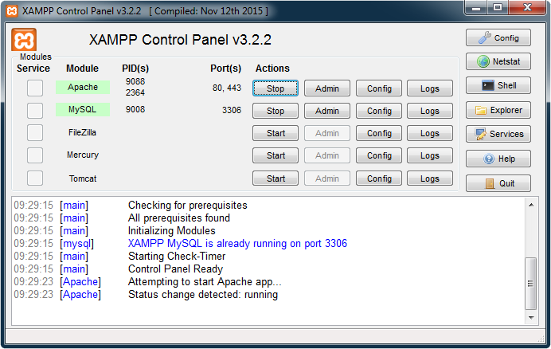
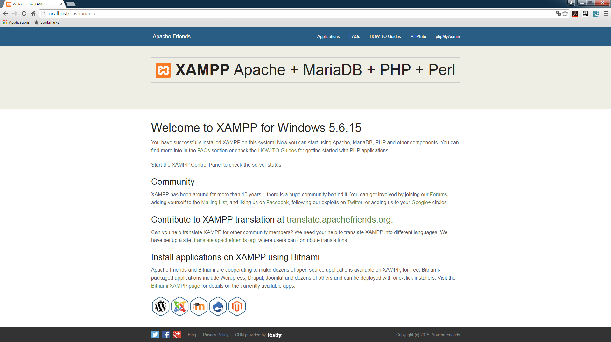
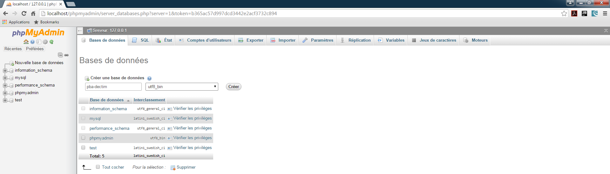
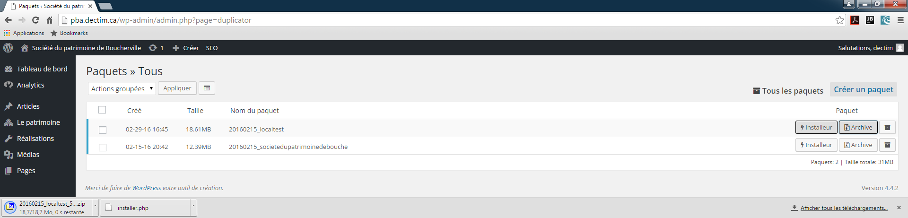
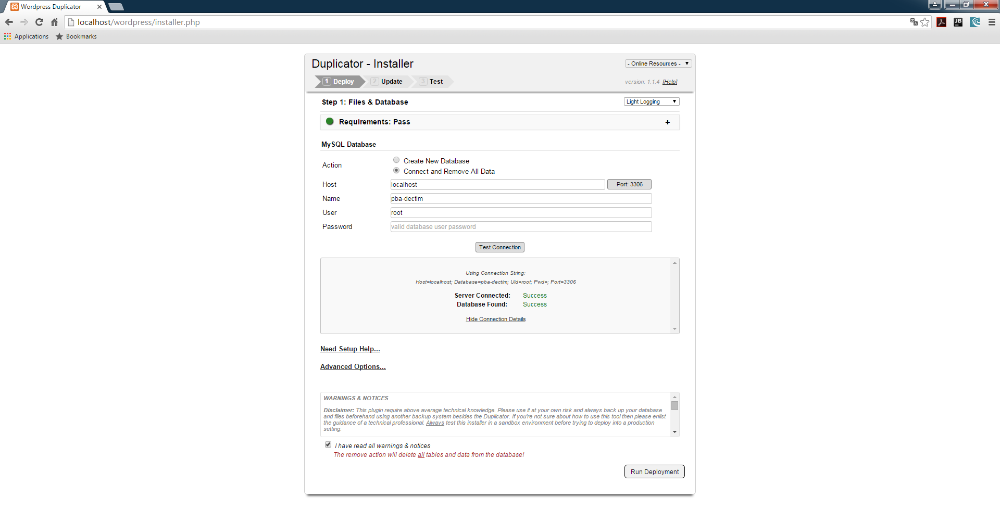

Fonctionnement pour l'école
Vous n'êtes pas à l'école? Voyez le tutoriel pour la maison
Étape 1 - Github
Téléchargez github pour desktop puis installez-le sur votre ordinateur. Suivez les étapes Log in, Configure et sautez l'étape Repositories. Allez dans la section dashboard, en cliquant sur le + en haut à gauche, sélectionnez clone pour cloner tous les éléments de github où vous le désirez sur votre ordinateur ou sur votre clé usb.
Application github pour desktop
Ainsi, vous avez une copie du repository de github sur lequel vous pouvez travailler. Ensuite, si ce n'est pas déjà fait, il est recommandé de créer une nouvelle branche au projet. En travaillant sur une copie et non pas sur la branche principale (master), il est moins probable de faire une erreur qui pourrait compromettre le projet.

Vous êtes maintenant prêts à passer à la prochaine étape.
Étape 2 - Utilisation de SASS
Si vous n'avez pas l'intention d'utiliser de SASS, vous pouvez passer directement à l'étape suivante. Autrement, téléchargez l'application personnalisée ci-dessous
modules-sass-gulp.cmdCopiez le fichier à la racine du dossier clone de github que vous avez installé précédemment et lancez-le. Gulp et de ses modules sy installeront automatiquement et vous serez prêts à utiliser l'invite de commande.
Ouvrez l'invite de commande (WINDOWS+R, cmd, ENTER) puis ciblez le dossier ou se trouve votre dossier clone de GihHub à l'aide de la commande «cd».

À partir de là, vous pourrez utilisez les différentes commandes de gulp et celles que nous avons personnalisées pour notre projet.
- gulp - Affiche les commandes disponibles.
- gulp styles - Compile fichiers SASS dans le dossier sass en fichiers CSS.
- gulp watch - Exécute la fonction gulp styles automatiquement à chaque changements dans les fichiers .scss, pour arrêter le watch, utilisez CTRL+C.
Étape 3 - XAMPP
Téléchargez l'application XAMPP et installez-la sur votre ordinateur
XAMPPDans le dossier de l'isntallation (C:/xampp), trouvez le dossier nommé htdocs. C'est ce qui s'y trouve qui s'affichera lorsque vous ouvrirez une page locale dans votre navigateur.
Vous pouvez maintenant ouvrir l'application XAMPP et démarrer les processus Apache et MySQL. Ensuite, ouvrez votre navigateur préféré et entrez localhost. Vous êtes maintenant connectés sur votre serveur local.
 {kind=link}
{kind=link}
Étape 4 - WordPress
Nous allons maintenant installer WordPress dans l'environnement local que nous avons initié avec XAMPP. Pour commencer, allez sur la page phpMyAdmin (situé dans le menu de la page localhost)
Créez une nouvelle base de données et assurez-vous de mettre son interclassement à utf8-bin. Ensuite, téléchargez WordPress.
WordPress {kind=link}
Lorsque WordPress a terminé de télécharger, Copiez le fichier compressé dans le dossier htdocs de xampp (c:/xampp/htdocs) et décompressez-le. Vous pouvez ensuite supprimer le fichier compressé, nous n'en aurons plus besoin.
Finalement, visitez la page localhost/wordpress (remplacez wordpress par le nom du dossier décompressé de wordpress si vous l'avez changé) et entrez-y les informations nécessaires
- Nom de la base de données: le nom que vous avez utilisé pour la BD
- Identifiant: root
- Mot de passe: laisser vide
- Adresse: laisser localhost
- Préfixe: laisser _wp
{kind=link}
Créez votre compte administrateur, ce compte sera utilisé temporairement, vous pouvez donc entrer n'importe quoi. WordPress est maintenant installé localement sur votre ordinateur.
Cependant, ce WordPress local est vide. Pour s'assurer de travailler avec ce qui se rapproche le plus du produit final, nous copierons le WordPress actuel (pba.decim.ca) via le plugin duplicator. Pour ce faire, récupérez le fichier installer.php (installeur) et le fichier compressé (archive) puis copiez les à la racine de votre WordPress local. Finalement, supprimez le fichier wp-config.php.
{kind=link}
Allez ensuite sur localhost/wordpress/installer.php pour débuter la récupération des informations sur votre WordPress vide. Assurez-vous de cocher Connect and remove All Data et d'insérer toutes les informations requises pour la connection à la base de données. Vous pouvez utiliser le bouton Test Connection afin de vous assurer que le lien se fasse correctement.
{kind=link}
Vous avez maintenant une copie de pba.dectim.ca sur vorte WordPress local. Vous pouvez donc vous y connecter à l'aide des mêmes informations et y travailler sans rien briser.